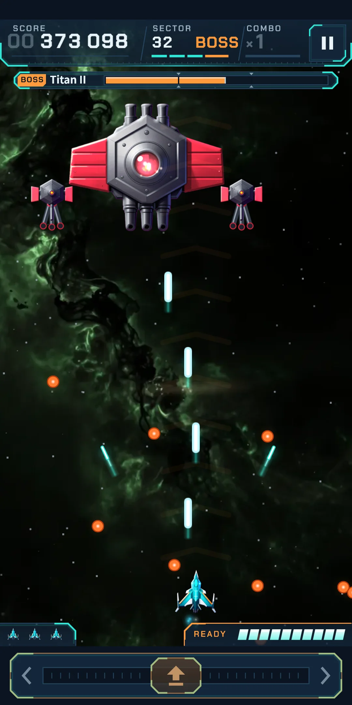
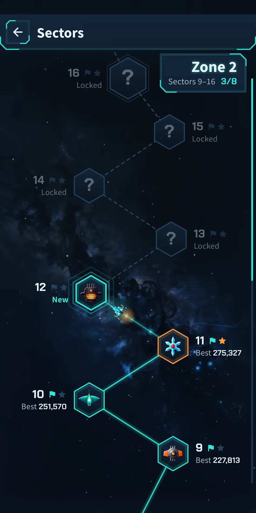
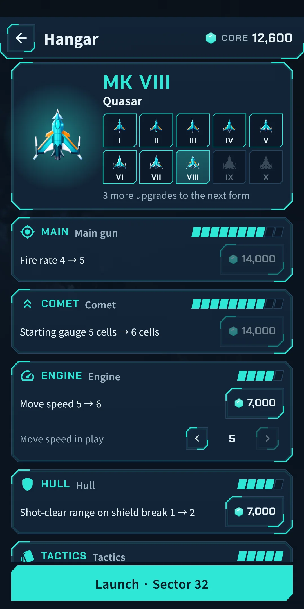
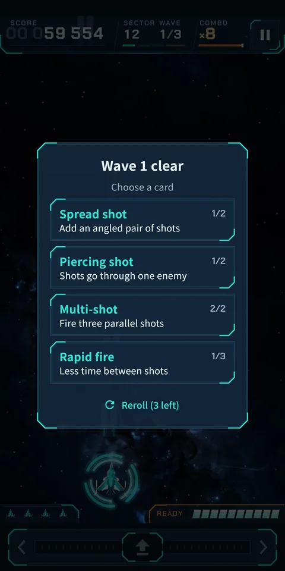
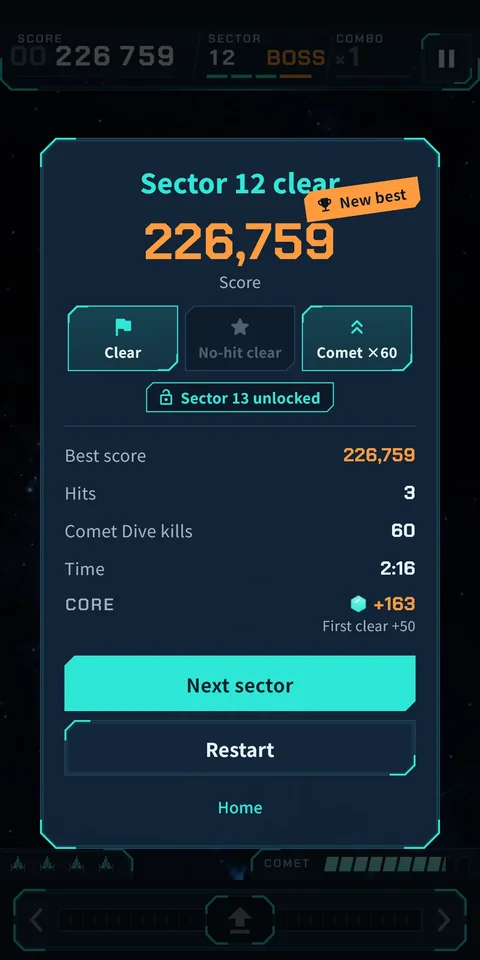

Cometdive
How to Play
How to Play







| App Name | Cometdive |
|---|---|
| Version | 1.0.0 |
| Developer | Willee Project |
| Platform | Android |
Cometdive is a vertical arcade space shooter you play with one hand. Drag left or right anywhere on the screen to move your ship; it fires on its own. Enemies fly in as formations and dive at you. Catch the divers to fill the comet gauge, then your ship becomes a comet and pierces straight through the formation (the Comet Dive).
| Card | Effect |
|---|---|
| Multi-shot | Fire two parallel shots → three |
| Spread shot | Add an angled pair of shots → two angled pairs |
| Rapid fire | Less time between shots (up to 3 times) |
| Piercing shot | Shots go through one enemy → two |
| Homing missiles | Fire missiles that chase the nearest enemy → more often |
| Wing drone | A drone fires beside you → two drones |
| Shield | One shield: take a hit without losing a ship → one more (refills all when chosen) |
| Comet charge | The comet gauge fills faster → much faster |
| Dive warning | Enemies flash orange before they dive |
| Extra ship | One more ship in reserve |
| Side guns (from Zone 2) | Your wingtips fire angled shots → more often |
| Heavy rounds (Zone 3) | Every 4th volley, straight shots deal double damage → every 3rd |
| Combo keeper (Zone 4) | Combos last longer, raising your score → much longer |
| Dive hunter (Zone 5) | Double damage to diving enemies → diving kills also fill the comet gauge faster |
| Chain arc (Zone 6) | Kills arc to one nearby enemy → two |
| Comet nova (Zone 7) | Your Comet Dive bursts a shockwave near the top → a second shockwave where you land clears nearby shots |
| Pulse laser (Zone 8) | Fires a piercing laser upward at intervals → more often |
| Comet wake (Zone 9) | Your Comet Dive leaves embers that burn enemies → the embers last longer |
You can look at all of these again in the Codex (chapter 8). When a sector brings a new enemy or boss you have not met, an introduction card appears at the start.
There are 16 enemy families. As the zones go up, higher tiers of the same family appear. A higher tier is tougher, and tier 4 has one more attack. Tiers are told apart by body color and white stripes.
| Name | What it does |
|---|---|
| Quark | The backbone of the formation. Fires now and then, and once while diving. |
| Starray | Curls and dives fast, firing twice on the way down. |
| Oort | Hard to crack. Sprays a fan of needles as it dives. |
| Cluster | Sturdy. Releases two Neutrinos when first hit. |
| Gamma | Takes precise aim at you with needles from the formation. |
| Neutrino | Released by Clusters and bosses. Swoops straight down. |
| Solar Sail | Zigzags down and drops a shot at every turn. |
| Plasma Lance | Pauses mid-dive, then spears straight down its lane. |
| Meteor Gun | Heats its barrels, then fires big, slow shells. |
| Lagrange | Sways as it sinks and drops two shots side by side. |
| Swingby | Fires hook shots that turn down and narrow your path. |
| Eclipse | Swoops halfway down, fires, and returns to its place. |
| Stardust | Crosses the field and leaves mines behind. |
| Quadrant | Spins down and scatters four shots in an X. |
| Sun Lens | Draws a warning line, then drops a beam along it. |
| Aurora | Wraps the enemy below it in a barrier. Take it out first. |
Elites are stronger enemies that carry a marker.
| Name | What it does |
|---|---|
| Ringshield | Wears a ring that blocks two shots. A Comet Dive breaks through. |
| Bounty | Big score and comet gauge if you catch it. It flees after one dive. |
| Prowplate | Shrugs off your shots in formation. Hit it while it dives. |
| Overdrive | Dives faster and more often. |
| Splitter | Bursts into two Neutrinos when destroyed. |
| Minetail | Leaves a mine where it was destroyed. |
| Name | What it does |
|---|---|
| Driftrock | A slow-falling rock. Break it and it splits into two pebbles. |
| Volatile crystal | Shoot it to burst and wreck the enemies around it. |
| Wreck | Unbreakable debris that blocks shots from both sides. |
| Meteor shower | After a warning, small meteors pour down in one line. |
| Gravity well | A vortex that bends your shots toward its center. |
| Arc pylons | Their current blocks your shots. Destroy one to cut it. |
Enemy shots are told apart by shape and glow, not by color alone.
| Name | What it does |
|---|---|
| Orb | Round and slow. The most common enemy shot. |
| Needle | Thin and fast. Often comes in a fan. |
| Shell | Big and slow. It narrows your room to dodge. |
| Hook | Turns once at a set moment. |
| Mine | Stops, blinks, and bursts into a ring. Two shots put it out. |
| Beam | A pillar of light that strikes along the warning line. Your Comet Dive can't break it. |
Dangerous attacks show a warning from the moment they begin. A beam draws a warning line first, a mine blinks before it bursts, a meteor shower pours down after a warning, and a bullet curtain shows its gap as an open lane. A WARNING strip appears when a boss arrives. The Dive warning card makes enemies flash orange before they dive.
Every sector ends with a boss. At the last sector of a zone you meet a new boss or a boss in its second form (the name followed by II), and the second form attacks differently.
| Boss | What it does | Second form (II) |
|---|---|---|
| Titan | Aims from its twin turrets and bursts rings and spirals from its hull. | Its turret covers blow off to bare three barrels. It shifts and drops bullet curtains with a gap. |
| Nebula | Aims fans of needles from its wing cannons and bursts rings and spirals. | Spreads its fins and lunges, then its wing cannons sweep fans of shots across each other. |
| Prism | Its two crystal shards fire needle rings while its body spins spirals. | Its blades split and its shards circle it, then it raises fences of beams. |
| Star Furnace | Aims shells from its exhaust guns and drops bullet curtains with a gap. | Its grate bursts open and spills fire. It lunges, drops bullet curtains, and scatters mines. |
| Orrery | Four orbiting spheres fire outward, and fans of hook shots turn toward you. | Its rings tilt and its spheres speed up. It sows mines and fires turning shots. |
| Ion Spire | Raises fences of beams and sweeps the field from its two capacitors. | Lightning wraps its coil. It raises staggered beam fences and bullet curtains, and calls Swingbys. |
The top has the title and the home-screen visuals, and the gear-shaped Settings button is at the top right. Below are two large buttons and three small ones.
| Button | What it does |
|---|---|
| Start sector N | Starts the furthest sector you have unlocked, with its boss and your best score for it shown. |
| Daily | Starts today's Daily. It shows today's boss, and if you have finished a run today, today's best and your streak. |
| Sectors | Pick any unlocked sector (below). It shows your current zone number. |
| Hangar | Spend cores to upgrade your ship (chapter 7). It shows your core balance, and a dot appears when you can afford an upgrade. |
| Records | Opens your records and the Codex (chapter 8). It shows your highest sector. |
When a sector ends, the result counts up. You see Score, Best score (New best if you beat it), Hits, Comet Dive kills, Time, and three medal slots (Clear, No-hit clear, Comet ×N). On a clear, Sector N unlocked appears, and the cores you earned are shown (First clear +N, Zone finale first clear +N). If you can afford an upgrade, N upgrades ready and a Hangar button appear. The buttons are Next sector (after a clear), Restart and Home.
The Hangar is where you spend the cores you earn in play to upgrade your ship. Open it from Hangar on Home or from the Hangar button on the result screen. There is no banner on this screen.
| Branch | Steps | What goes up |
|---|---|---|
| Main gun | 10 | Fire rate, shot size, shot damage |
| Comet | 10 | Starting gauge, dive width, dive damage to bosses |
| Engine | 5 | Move speed |
| Hull | 5 | Starting shield, refill one empty shield before the boss, a breaking shield clears nearby enemy shots (and clears a wider area) |
| Tactics | 5 | Choose a card before wave 1, rerolls per sector (1 to 3), choose from four cards |
As your total steps grow, your ship changes form through ten of them: MK I (Spark), MK II (Flare), MK III (Blaze), MK IV (Inferno), MK V (Supernova), MK VI (Pulsar), MK VII (Magnetar), MK VIII (Quasar), MK IX (Hypernova) and MK X (Big Bang). It changes at 3, 7, 12, 19, 23, 26, 29, 32 and 35 total steps. A form changes how the ship looks; its strength comes from the upgrades you have bought. When it changes, a short effect plays and From your next launch: MK N appears.
Open them from Records on Home.
Open Settings (the gear) at the top right of Home. During play you can also open it from the pause window. There are two groups: Game and General.
| Item | What it does |
|---|---|
| Sound effects | Turns sound effects on and off |
| Vibration | Turns vibration on and off (when you are hit, when a boss falls, on a Comet Dive, and when your ship changes form) |
| Reduce effects | Tones down effects like shaking and flashing |
| Game music | Turns the music during play on and off |
| Menu music | Turns the music on Home and in menus on and off |
| Music volume | Sets the volume of game and menu music in 10% steps. You can change it when at least one of the two is on |
| Sound effect volume | Sets the volume of sound effects in 10% steps. You can change it when sound effects are on |
| Screen shake | The screen shakes when you are hit and on big explosions. You can turn it off |
| Item | What it does |
|---|---|
| Language | Follow your Device language (the default), or pick from the list (English, 日本語, 한국어, 简体中文, 繁體中文) |
| Replay the tutorial | Plays the tutorial again. It is not recorded |
| Privacy options | Review or change your ad consent. Shown only in regions where consent is required (such as Europe) |
| About | Version, this guide (How to play), Privacy policy and Open-source licenses. In the licenses list you can see the tools used to make the art and music |
The screen colors are one dark theme.